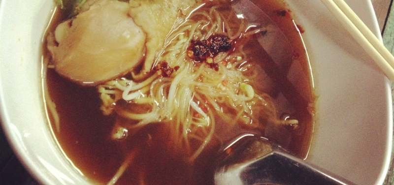

ในบ่ายวันหนึ่ง สายลมแผ่วๆ แสงแดดอ่อนๆ ผมกำลังนั่งกินเกี๋ยวต๋วยไก่รสอร่อยเจ้าประจำ
ผมใช้ตะเกียบแกะเนื้อให้หลุด พร้อมจิ้มน้ำจิ้ม แล้ววางลงบนเส้นเล็กแห้งที่เตรียมไว้ก่อนแล้วบนช้อนคันนั้น มีกระเทียมเจียวปนอยู่บางแห่ง
ก้อนอาหารแตะลิ้นผ่านลำคอลงกระเพาะ .. อยาก อยากกินคำต่อไป
คำที่สอง สาม สี่ ..
ผมรู้สึกเผ็ด ร้อน ไม่มากนัก พอเหงื่อออก แสบกระเพาะนิดหน่อย
"ทำไมเราต้องจิ้มน้ำจิ้ม ไม่จิ้มได้มั้ย กินปกติก็พอปากท้องแล้ว" - ผมถามตัวเอง
แล้วคำตอบพร้อมเหตุผลอันนั้น ก็ผุดขึ้นมา
จากนั้นผมก็กินต่ออย่างเอร็ดอร่อย เคี้ยวบ้างไม่เคี้ยวบ้าง จนหมด
...
จิ้มทุกช้อนทุกคำ
ปล. รูปจาก วงใน